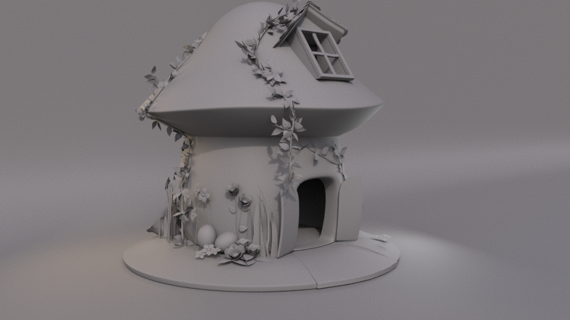
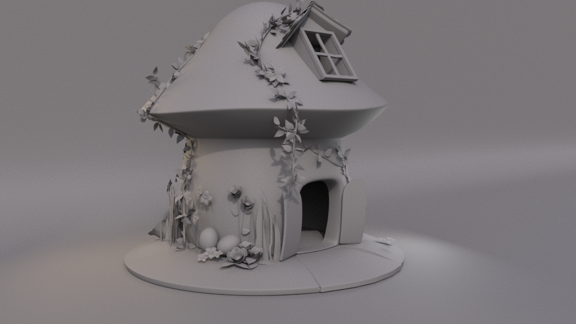

This is a personal project, it is inspired by a little toy, that I had
when I was a kid. I created this project, as an opportunity to
practice Substance Designer and to create a more stylized
environment.
Software used:
Maya/Arnold, substance painter, Substance 
